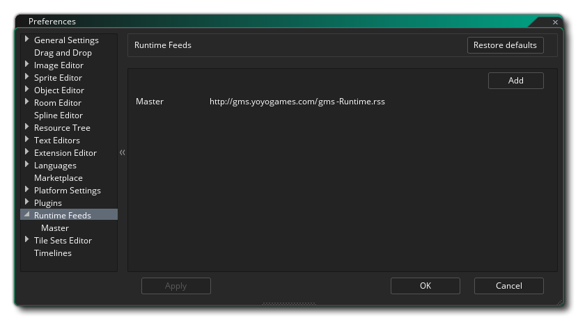

Les préférences de flux d'exécution sont utilisées pour afficher et modifier les temps d'exécution actuellement installés ainsi que le temps d'exécution en cours d'utilisation. GameMaker Studio 2 peut avoir plusieurs outils d'exécution différents installés à la fois et vous pouvez définir lequel utiliser à partir de cette préférence. Idéalement, vous voulez utiliser le runtime le plus à jour, mais parfois il peut avoir un problème, ou vous pouvez être obligé d'utiliser un plus ancien pour la comparabilité, etc... et ainsi vous pouvez changer les outils d'exécution que GameMaker Studio 2 utilise pour construire votre jeu ici.
La section initiale de cette préférence est liée à l'endroit où vous extrayez les outils d'exécution et vous oblige à entrer une URL dans un flux RSS. Ce flux sera ensuite analysé pour les mises à jour des outils d'exécution qui peuvent ensuite être téléchargés et installés. Cette section affiche l'URL de flux d'exécution principale par défaut, mais vous pouvez cliquer sur le bouton Ajouter pour créer un nouveau flux d'exécution où vous donnez le nom et l'URL du flux RSS, puis cliquez sur Appliquer pour indiquer à GameMaker Studio 2 d'y accéder. Vous devrez fermer et rouvrir la fenêtre Préférences pour le nouveau flux à afficher.
Une fois qu'un flux d'exécution a été créé, il sera listé dans cette section en tant que sous-catégorie, et vous devriez toujours avoir au moins un flux listé (par défaut, ce serait le flux principal). Les options de flux d'exécution sont données ci-dessous pour Master, mais elles seront les mêmes pour tous les autres:
Les préférences Master Runtime Feed sont utilisées pour sélectionner, installer et désinstaller les différents outils d'exécution (cette page sera la même pour tous les autres flux d'exécution que vous avez ajoutés). En haut, vous avez les outils d'exécution en cours d'utilisation, la date à laquelle elle a été créée et l'emplacement où elle est stockée sur le disque dur. Sous ces détails, vous pouvez trouver une liste de toutes les exécutions disponibles, et vous pouvez choisir n'importe lequel de cette liste pour devenir l'exécution "en cours d'exécution" utilisée pour compiler vos projets.
Pour sélectionner une durée d'exécution différente, il vous suffit de la trouver dans la liste, puis de double-cliquer
dessus. Si le moteur d'exécution n'a pas été téléchargé et installé, vous serez invité à le faire, et une fois qu'il aura été installé, vous serez invité à fermer et redémarrer l'EDI pour que le nouveau moteur d'exécution puisse être initialisé.
Cette liste d'exécution détaille toutes les exécutions disponibles, leur numéro de version, la date à laquelle elles ont été publiées et, si elles sont installées, le chemin d'accès à l'emplacement où elles ont été installées. Le côté droit montre également les différentes icônes d'état qui sont les suivantes:
Ceci marque l'exécution courante qui a été sélectionnée pour être utilisée lors de la construction de vos projets. Cliquez sur ce bouton pour lancer le téléchargement et l'installation de l'exécution sélectionnée (une barre d'état s'affichera en haut à droite de l'IDE). En cliquant dessus, vous supprimez l'exécution sélectionnée de votre disque dur. Vous pouvez mettre à jour la liste d'exécution à tout moment à partir du flux RSS donné en cliquant sur le bouton d'actualisation
.